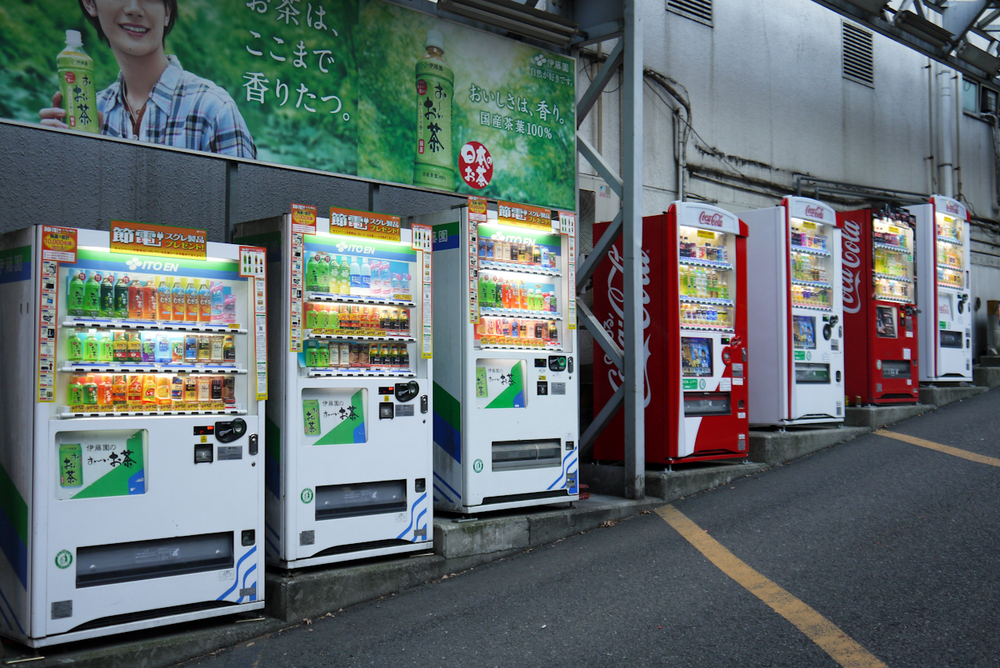

My Tokyo cyberpunk adventure.
Many people will tell you that Japan is a nation of extremes. Brand-new, towering skyscrapers sit right alongside tiny temples that have stood for hundreds of years. The cities are a cornucopia of technology, while the countryside rattles along with trains and mechanised rice planters built before the bubble collapsed. I recently had the good fortune to travel to Tokyo and spend 10 days touring the city, getting a feel for a city racing headlong to the future.
Cyberpunk playground
Tokyo is a massive place. More a collection of joined-up towns with their own Central Business Districts, residential areas and industry than one giant city. Some of these towns retain the old-world charm of the time before the Meiji restoration; when the emperor ushered in an age of modernisation, while other areas are filled with signs in glowing neon and great swathes of people buzzing about. I experienced my fair share of both but, being on the geeky end of the spectrum, it was the latter that grabbed my attention.
Everything automated
 There is an unbelievable amount of automation in Tokyo. Vending machines are everywhere; usually filled with drinks but some of them hold more exotic wares (toast is exotic when it comes out of a vending machine, I swear). Most machines will have a wide variety of drinks available, from hot cans of coffee to simple water to ice cream drinks (these are delicious). The food machines at the stations remind me of Blade runner; stocked as they are with soy snacks and umbrellas. Many restaurants will have vending machines for ordering your food too. Ichiran in Shibuya allows you to eat a meal without ever seeing more of the staff than their hands as they place your ramen through a slot at your bench table. Perfect for any introverts!
Tech Mecca
Akihabara Electric town is the place geeks and gadgeteers dream of. Street after street of electronic and gadget shops. Everything from audio equipment and computer peripherals to vinyl toys and DVDs. The stores in Akihabara stretch up and up with floors of just about any tech you could imagine. There are some real gems hidden amongst the tacky, touristy shops and you'll certainly see some unique sights. The streets are often crowded and so the main strip is closed to cars on weekends to ease some of the crush.
A series of tubes
 Japan is currently ranked 6th in the world by Akamai's 'State of the Internet' report, in terms of connectivity (Britain is hovering around 23rd). Average peak connection speed is approximately 78Mb/s and 90% of the country has a connection of over 4Mb/s. Internet cafes are dotted all around the city, with concentrations in Electric town, and are closer to public lounges with computers than the dingy LAN-centres we know in the UK. Food and drink can be bought and is served in your booth or room to snack on while you surf or play games. Mobile connectivity is also ubiquitous and quick. Answering a phone call in a public place is considered rude and there are many signs on trains and other public areas asking you to turn your phone to silent and refrain from answering phone calls. Instant messaging and emails, however, are considered perfectly acceptable and so you will often see Tokyoites, especially teenagers, tapping away on their phone keyboard.
Japan is currently ranked 6th in the world by Akamai's 'State of the Internet' report, in terms of connectivity (Britain is hovering around 23rd). Average peak connection speed is approximately 78Mb/s and 90% of the country has a connection of over 4Mb/s. Internet cafes are dotted all around the city, with concentrations in Electric town, and are closer to public lounges with computers than the dingy LAN-centres we know in the UK. Food and drink can be bought and is served in your booth or room to snack on while you surf or play games. Mobile connectivity is also ubiquitous and quick. Answering a phone call in a public place is considered rude and there are many signs on trains and other public areas asking you to turn your phone to silent and refrain from answering phone calls. Instant messaging and emails, however, are considered perfectly acceptable and so you will often see Tokyoites, especially teenagers, tapping away on their phone keyboard.
Waking up from the Japanese dream
Tokyo has many of the innovations of other major cities that I've visited around the world. The trains and metro system have a card system similar to London's Oyster cards (although the Suica and Pasmo cards work right the way across Japan) and there is the distinct buzz of activity that is present in places like New York. However, Japan does enough differently to make a visit unique. The tech that make life easier and just a bit more novel is a thing to behold and should not be missed. You'll get hooked on that canned coffee, trust me.